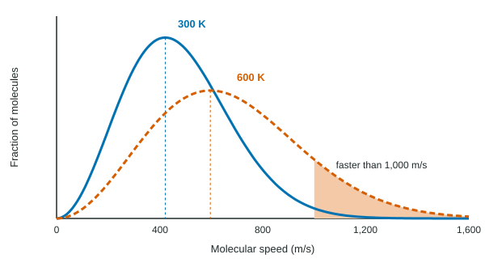

The ideal gas law describes what gases do. The kinetic molecular theory explains why, by picturing a gas as a crowd of tiny particles in constant, random motion. It is a model: a simplified picture that makes predictions you can test, and the predictions match measured gas behavior well at everyday conditions.
The assumptions of the model
The kinetic molecular theory (KMT) pictures an ideal gas this way:
- A gas is made of particles in constant, random, straight-line motion.
- The particles are so small, and so far apart, that their own volume is negligible compared with the volume of the container.
- The particles neither attract nor repel each other, except when they collide.
- Collisions with each other and with the walls are elastic: energy can pass from one particle to another, but none is lost overall.
- The average kinetic energy of the particles is proportional to the kelvin temperature.
Temperature is average kinetic energy
A moving particle has kinetic energy, KE = ½mv², where m is its mass and v its speed. Assumption 5 says what temperature is at the particle level: the higher the kelvin temperature, the higher the average kinetic energy of the particles. At 0 K, the model's particles would stop. The energy a sample holds because its particles move is its thermal energy; heating a gas adds thermal energy and speeds its particles up.
A key consequence: at the same temperature, every gas has the same average kinetic energy. Because KE = ½mv², lighter particles must then move faster to have the same kinetic energy. At 25 °C, hydrogen molecules (2.016 g/mol) move almost four times as fast on average as oxygen molecules (32.00 g/mol), since √(32.00 / 2.016) ≈ 3.98.
Explaining the gas laws
Pressure comes from particles hitting the walls. The KMT explains each gas law with how often and how hard they hit:
- More gas, same volume and temperature: more particles hit the walls each second, so the pressure rises (P ∝ n).
- Smaller volume, same n and T: the particles reach the walls more often and the same force is spread over less area, so the pressure rises (P ∝ 1/V).
- Higher temperature, same n and V: the particles move faster, so they hit the walls both more often and harder, and the pressure rises (P ∝ T).
- Partial pressures add: particles do not attract or repel, so each gas hits the walls as if the others were not there.
A spread of speeds: the Maxwell-Boltzmann distribution
Not every particle moves at the average speed. Collisions constantly swap energy, so at any instant some particles are nearly still and a few are very fast. A graph of the fraction of particles at each speed is a Maxwell-Boltzmann distribution (Figure 1).

Four features to read from these graphs:
- The peak is the most probable speed. The curve has a long tail to the right, so the average speed is a little above the peak.
- Higher temperature: the peak moves right and down, and the curve spreads out. Far more particles are in the fast tail.
- Same temperature, lighter gas: the curve looks just like a higher-temperature curve: peak to the right, lower and wider. (The kinetic energies are the same, but the speeds differ.)
- The total area under each curve is the same, because it stands for all the particles in the sample, 100%.
Worked example: comparing two gases. At 300 K, which has the greater average kinetic energy, He or Ar, and which moves faster on average? By what factor?
Kinetic energy. Same temperature, so the same average kinetic energy.
Speed. ½mHevHe² = ½mArvAr², so vHe / vAr = √(mAr / mHe) = √(39.95 / 4.003) = √9.980 = 3.16. Helium atoms move about 3.16 times as fast.